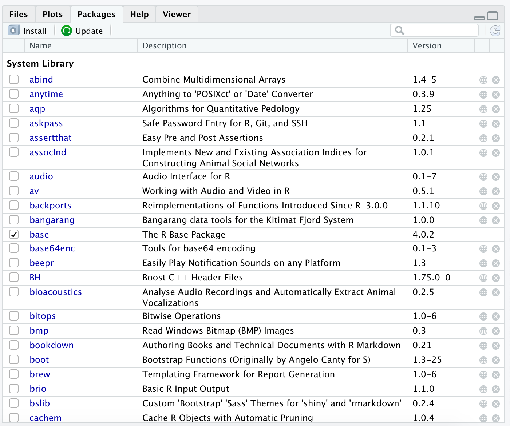
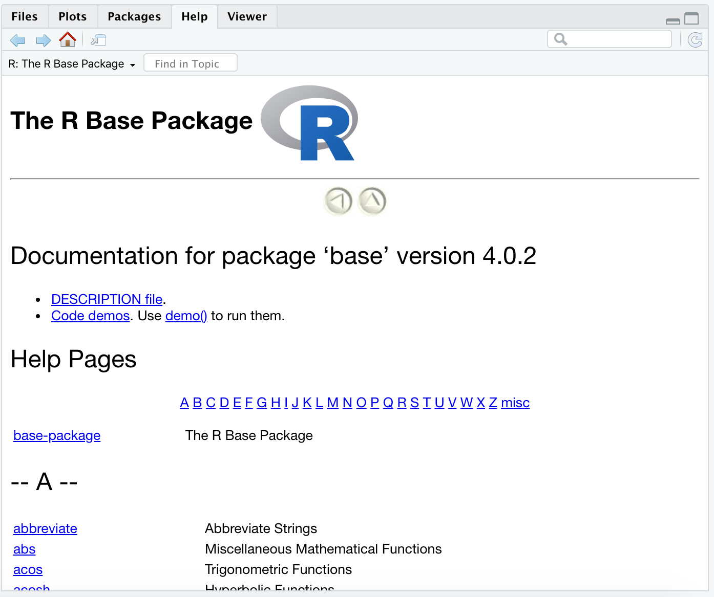
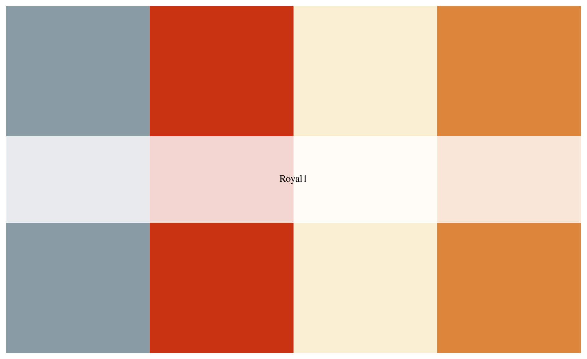
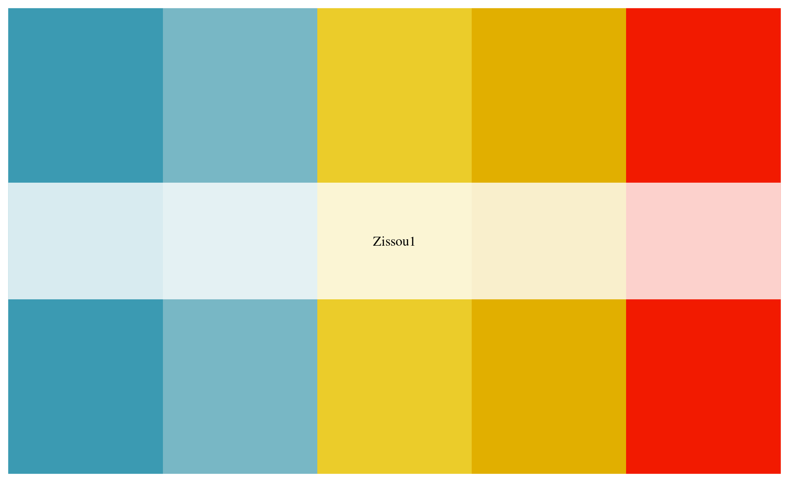

Module 14 Packages
Learning goals
- Learn what
Rpackages are and why they are awesome - Learn how to find and read about the packages installed on your machine
- Learn how to install
Rpackages fromCRAN - Learn how to install
Rpackages fromGitHub
As established in the Calling functions module, R comes with hundreds of built-in base functions and datasets ready for use. You can also write your own functions, which we will cover in an upcoming module.
You can also access thousands of other functions and datasets through bundles of external code known as packages. Packages are developed and shared by R users around the world – a global community working together to increase R’s versatility and impact.
Some packages are designed to be broadly useful for almost any application, such as the packages you will be learning in this course (ggplot, dplyr, stringr, etc.). Such packages make it easier and more efficient to do your work with R.
Others are designed for niche problems that can be made much more doable with specialized functions or datasets. For example, the package PBSmapping contains shoreline, seafloor, and oceanographic datasets and custom mapping functions that make it easier for marine scientists at the Pacific Biological Station (PBS) in British Columbia, Canada, to carry out their work.
Instructor tip:
Here it may be worth discussing what it means for R to be an open-source project, where millions of users all over the world are developing packages for it at once, and how that gives R an edge over more rigid programming languages such as MATLAB and SASS.
Packages you already have
In RStudio, look to the pane in the bottom right and click on the Packages tab. You should see something like this:
 This is displaying all the packages already installed in your system.
If you click on one of these packages (try the base package, for example), you will be taken to a list of all the functions and datasets contained within it.

When you click on one of these functions, you will be taken to the help page for that function. This is the equivalent of typing ? <function_name> into the Console.
Installing a new package
There are a couple ways to download and install a new R package on your computer. Most packages are available from an open-source repository known as CRAN (which stands for Comprehensive R Archive Network). However, an increasingly common practice is to release packages on a public repository such as GitHub.
Installing from CRAN
You can install CRAN packages one of two ways:
Installing from GitHub
To install packages from GitHub, you must first download a CRAN package that makes it easy to do so:
install.packages("devtools")Most packages on GitHub include instructions for downloading it on its GitHub page.
For example, visit this GitHub page to see the documentation for the package wesanderson, which provides color palette themes based upon Wes Anderson’s films. On this site, scroll down and you will find instructions for downloading the package. These instructions show you how to install this package from your R Console:
devtools::install_github("karthik/wesanderson")Now go to your Packages tab in the bottom-right pane of RStudio, scroll down to find the wesanderson package, and click on it to check out its functions.
Loading an installed package
There is a difference between installed and loaded packages. Go back to your Packages tab. Notice that some of the packages have a checked box next to their names, while others don’t.
These checked boxes indicate which packages are currently loaded. All packages in the list are installed on your computer, but only the checked packages are loaded, i.e., ready for use.
To load a package, use the library() function.
library(fun)
library(wesanderson)Now that your new packages are loaded, you can actually use their functions.
To emphasize: a package is installed only once, but you library() the package in each and every script that uses it. Think of a package as camping gear. Like an R package, camping gear helps you do cool things that you can’t really do with the regular stuff in your closet. And, like an R package, you only need to install (i.e., purchase) your gear once; but it is useless unless you pack it in your car (i.e., library() it) every time you go on a trip.
Calling functions from a package
Most functions from external packages can be used by simply typing the name of the function. For example, the package fun contains a function for generating a random password:
random_password(length=24)
[1] "\"^@,+E6Ln#b3Z7y);ItUqSXR"Sometimes, however, R can get confused if a new package contains a function that has the same name of some function from a different package. If R seems confused about a function you are calling, it can help to specify which package the function can be found in. This is done using the syntax <package_name>::<function_name>. For example, the following command is a fine alternative to the command above:
fun::random_password(length=24)
[1] "VL5xs|(a}0.Rt3#/_zb\\op{M"Note that this was done in the example above using the devtools package.
Side notes
Package dependencies
Most packages contain functions that are built using functions built from other packages. Those new functions depend on the functions from those other packages, and that’s why those other packages are known as dependencies. When you install one function, you will notice that R typically has to install several other packages at the same time; these are the dependencies that allow the package of interest to function.
Package versions
Packages are updated regularly, and sometimes new versions can break the functions that use it as a dependency. Sometimes you may have to install a new version (or sometimes an older version!) of a dependency in order to get your package of interest to work as desired.
Review: the workflow for using a package
To review how to use functions from a non-base package in R, follow these steps (examples provided:)
- Install the package once.
# Example from CRAN
install.packages("wesanderson")
# Example from GitHub
devtools::install_github("karthik/wesanderson")- Load the package in each script.
# Example
library(wesanderson)- Call the function.
wes_palette("Royal1")
wesanderson::wes_palette("Zissou1")
(This function creates a plot displaying the different colors contained within the specified palette.)
- Get help with the question mark:
?
?wes_palette